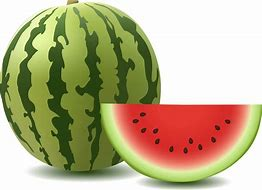

| fruit name |
colour |
price |
| Papaya |
yellow |
50 |
| mango |
red |
60 |
| watermelon |
dark green |
70 |
| guava |
green |
58 |
“Two watermelons cannot be held under one arm.”
“Life is like a watermelon; sweet, juicy, and best enjoyed with friends.
“Watermelon: the unofficial mascot of summertime.”
“When in doubt, have a slice of watermelon.”
“the ultimate thirst-quencher.”
“Sweet moments are as refreshing as a cold watermelon and taste fruit on a hot day.”
It comes in many colours like red, yellow, pink ,orange
.
The daffodil is the national flower of wales. The daffodil is the symbol for a number of cancer charities around the world.
Daffodils have been used regularly in folk and traditional medicine, for in addition to the well-documented sickness
WHO
Guduvanchery
-
watermelon
-
guava
link
